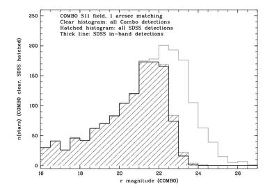
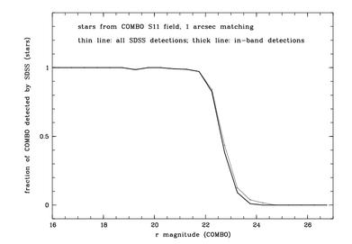
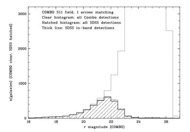
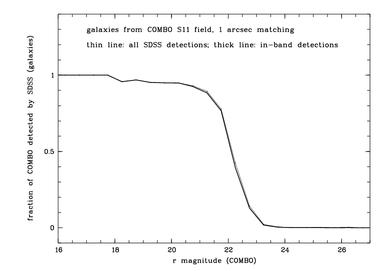

We have determined the completeness of the SDSS photometric survey by comparing the number of objects found by the SDSS pipeline to the number found by the COMBO-17 survey in a region of sky that has been scanned by both surveys, and in a second comparison with data from observations of a CNOC survey field. While the comparison was carried out for DR1 data, the DR2/DR3 data are not significantly different.
Here we show details for the comparison with COMBO-17 data. The region of sky used here for calibration is COMBO-17's S11 field, which is covered by run 1140, camcol 5, fields 151-154 and run 1231 camcol 5 and 6, fields 42-45.
The sky brightness in over half the SDSS is better than it is in these fields, and the seeing in most of the survey is better than it is in one of these runs, so the completeness in most of the survey should be better than what is shown here. See the seeing and sky brightness table for COMBO-17/SDSS overlap below.
In the following plots, PSF r-band magnitudes are used for stars, and Petrosian r-band magnitudes are used for galaxies.
| Which objects | Number counts | Fractional completeness |
|---|---|---|
| Stars |  |  |
| Galaxies |  |  |
Note that COMBO-17's multicolor classification starts to become incomplete for stars at about one magnitude fainter than SDSS. Therefore, the SDSS 50% completeness is slightly brighter than indicated by this plot.
The number of objects above the 5-sigma detection threshold depends heavily on the seeing and sky brightness in a given field. The following table summarises the seeing and sky brightness in the overlap region.
| run | camcol | field | seeing ["] | sky brightness [mag/sq. "] |
|---|---|---|---|---|
| 1140 | 5 | 151 | 1.293 | 20.8210 |
| 1140 | 5 | 152 | 1.273 | 20.8210 |
| 1140 | 5 | 153 | 1.280 | 20.8150 |
| 1140 | 5 | 154 | 1.331 | 20.8060 |
| 1231 | 5 | 42 | 1.941 | 20.7670 |
| 1231 | 5 | 43 | 2.051 | 20.7670 |
| 1231 | 5 | 44 | 2.052 | 20.7700 |
| 1231 | 5 | 45 | 2.011 | 20.7710 |
| 1231 | 6 | 42 | 2.010 | 20.7740 |
| 1231 | 6 | 43 | 2.113 | 20.7750 |
| 1231 | 6 | 44 | 2.122 | 20.7750 |
| 1231 | 5 | 45 | 2.033 | 20.7780 |
Comparing with the seeing and sky brightness statistics, most of the SDSS fields have better seeing than this overlap region. Over half of the fields have lower sky levels. Therefore, the completeness in most of the survey should be better than what is shown here